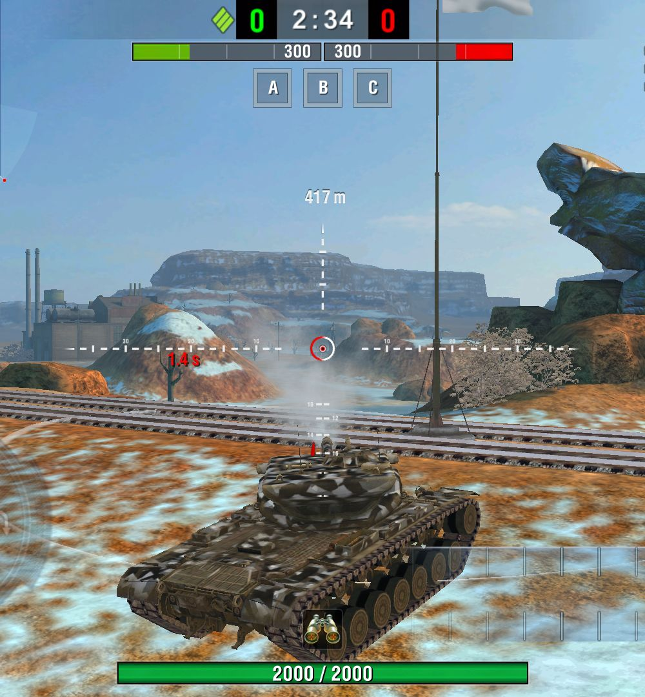

WGL GunSight Strv
Creator
Name: Freewheeler
Twitter:
@Freewheeler_
Mod Information
ID: gfx.reticle.wgl_strv
Description: WGL GunSight Mod.
Copyright (C) 2009–2016 Wargaming.net
All rights reserved.
